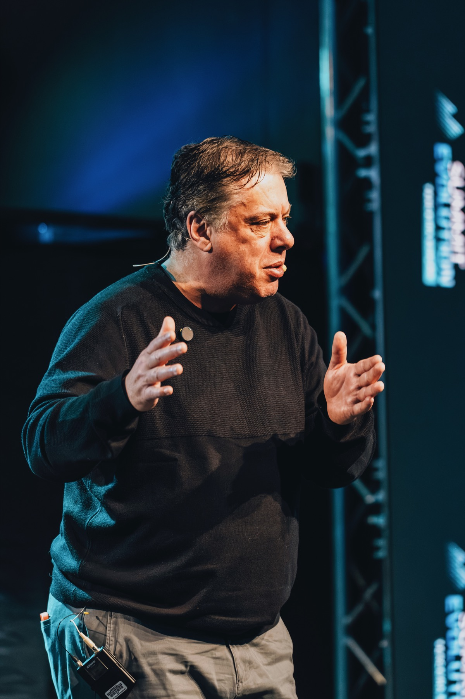

Facebook e Instagram Ads para negócios locais
A Imersão
Meta Ads com IA
25 e 26 de agosto • 7 PM • Horário de Nova York
Antes de começar
Quem é
Fábio Borges?

Nossa jornada
Do mercado
à campanha.
Dois dias para entender, construir e decidir.
01
Dia 1
Entender antes
de anunciar.
Mercado • Concorrentes • Reviews • Público • Oportunidades
02
Dia 2
Transformar inteligência
em campanha.
Oferta • Criativos • Andrômeda • Estrutura • Otimização
Encontro extra • Quinta-feira
ChatGPT Ads
Uma nova superfície. Uma nova oportunidade.
Três ferramentas
Três formas de trabalhar.
ChatGPTConverse e crie
ClaudeLeia e aprofunde
CodexConstrua e execute
Uma história que começou no rio
Quando eu tinha
8 anos...
Meu avô jogou um balde de ração na água
“Vô, você está jogando
a nossa isca?”
“
A gente precisa avisar os peixes que a gente existe e que está aqui.
No seu negócio é igual
Primeiro presença.
Depois oportunidade.
O cofre está aberto